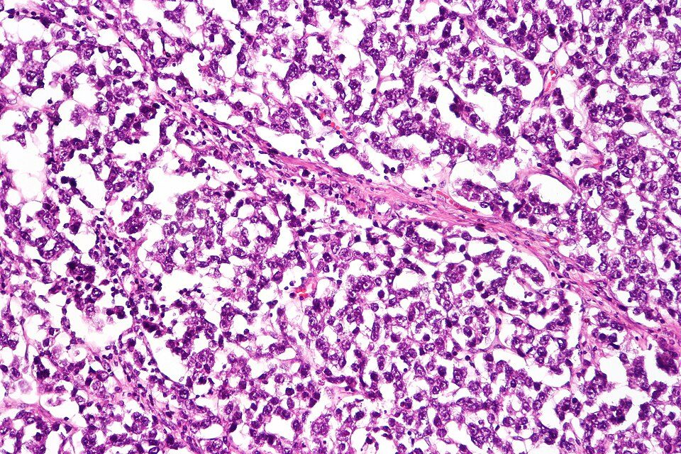

Información divulgativa. No sustituye la valoración de tu equipo médico ni sirve para decidir un tratamiento.


En resumen
| Frecuencia | Alrededor del 5-10 % de los tumores malignos de ovario |
| Quién | Los germinales, sobre todo niñas, adolescentes y mujeres menores de 30; los estromales, cualquier edad |
| Tipos principales | Disgerminoma, tumor del saco vitelino, teratoma inmaduro, tumor de células de la granulosa |
| Marcadores | Alfafetoproteína, beta-hCG, LDH; inhibina en los de la granulosa |
| Pronóstico | Los germinales se curan en más del 90 % de los casos, incluso avanzados |
Qué son
El ovario tiene tres tipos de células de los que pueden nacer tumores: las que lo recubren (origen de los carcinomas), las células germinales (las que dan lugar a los óvulos) y las del estroma y los cordones sexuales, que producen hormonas.
Tumores de células germinales malignos
- Disgerminoma: el más frecuente; equivalente al seminoma del testículo. Muy sensible a la quimioterapia y a la radioterapia.
- Tumor del saco vitelino: produce alfafetoproteína; crece deprisa.
- Teratoma inmaduro: contiene tejidos embrionarios inmaduros. El teratoma maduro (quiste dermoide) es benigno y muy frecuente.
- Carcinoma embrionario, coriocarcinoma no gestacional y tumores mixtos, raros.
Tumores del estroma y los cordones sexuales
- Tumor de células de la granulosa del adulto: produce estrógenos, lo que puede causar sangrados tras la menopausia o engrosamiento del endometrio. Tiene casi siempre la mutación FOXL2 y tiende a recaer tarde, incluso décadas después.
- Tumor de la granulosa juvenil, tumor de Sertoli-Leydig (puede producir andrógenos y causar rasgos masculinos) y otros.
Síntomas
- Dolor abdominal, a veces brusco por torsión o rotura del tumor.
- Bulto o aumento del abdomen, porque pueden ser grandes.
- Alteraciones hormonales: pubertad precoz en niñas, sangrados irregulares, exceso de vello o voz grave.
Diagnóstico
Ecografía, resonancia o TC, y marcadores tumorales en sangre (alfafetoproteína, beta-hCG, LDH, inhibina, AMH). El diagnóstico definitivo lo da el estudio del tumor extirpado. En niñas y adolescentes se trata en unidades de oncología pediátrica.
Tratamiento
- Cirugía conservadora de la fertilidad: casi siempre se extirpa solo el ovario afectado y se conservan el útero y el otro ovario, con estadificación.
- Quimioterapia BEP (bleomicina, etopósido y cisplatino) en los germinales salvo en estadios muy precoces de bajo riesgo, en los que basta con vigilancia.
- En los tumores de la granulosa, cirugía y, en estadios avanzados o recaídas, quimioterapia con platino, nueva cirugía u hormonoterapia.
Pronóstico y seguimiento
Los tumores germinales malignos tienen un pronóstico excelente: se curan más del 90 % de los casos, y la mayoría de las mujeres conservan la posibilidad de tener hijos. El seguimiento incluye marcadores y pruebas de imagen. En los tumores de la granulosa el seguimiento debe ser muy largo por las recaídas tardías.
Ver también: Cáncer de ovario, Cáncer de testículo, Fertilidad y cáncer.
Historia · Medicapedia
Tumores germinales y estromales de ovario en la historia de la medicina
Cómo se descubrió, quién lo investigó y cómo cambió su tratamiento a lo largo de los siglos, contado en Medicapedia, nuestra web hermana de historia de la medicina.
Leer la historia en Medicapedia ↗Fuentes
- Ray-Coquard I, et al. Non-epithelial ovarian cancer: ESMO Clinical Practice Guidelines. Ann Oncol. 2018;29(Suppl 4):iv1-iv18. doi:10.1093/annonc/mdy001
- NCI. Tumores de células germinales de ovario (PDQ). cancer.gov/espanol/tipos/ovario
- Shah SP, et al. Mutation of FOXL2 in granulosa-cell tumors of the ovary. N Engl J Med. 2009;360:2719-2729. doi:10.1056/NEJMoa0902542